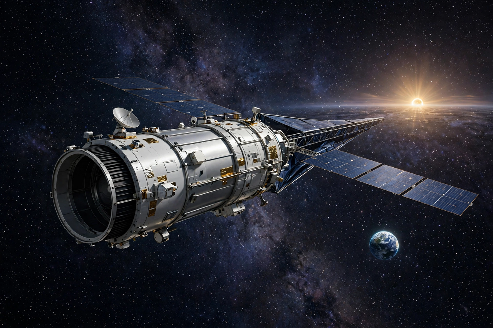

Kepler space telescope
From Wikipedia, the free encyclopedia
| Kepler space telescope | |
|---|---|
| Operator | NASA / Ames |
| Launch | 7 March 2009 |
| Method | Transit photometry |
| Discoveries | 2,600+ confirmed exoplanets |

Kepler in heliocentric orbit (artist's concept).The Kepler space telescope was a NASA observatory launched in 2009 to answer a single question: how common are Earth-sized planets in the habitable zones of other stars? By staring unblinkingly at one patch of sky in Cygnus and Lyra — more than 150,000 stars — and recording the minute dimming when a planet crossed its star, Kepler revolutionised planetary science.
Before Kepler, exoplanets were curiosities; after it, they were statistics. Its catalogue of over 2,600 confirmed planets (plus thousands of candidates) showed that planets outnumber stars, that small rocky worlds are common, and that systems are wildly diverse — hot Jupiters, super-Earths, mini-Neptunes, and planets orbiting two suns. Analysis of its data suggested billions of roughly Earth-sized planets in habitable zones in the Milky Way.
K2 and retirement
When reaction wheels failed in 2013, engineers reinvented the mission as "K2", balancing the crippled craft against sunlight pressure to survey fields along the ecliptic — finding hundreds more planets and observing supernovae and solar-system objects. Kepler was retired in October 2018 when its fuel ran out, exactly 380 years after Johannes Kepler's laws — its namesake — had been completed. Its successor TESS now surveys the whole sky's brightest stars.
See also
TESS · Kepler's laws of planetary motion · Exoplanet · James Webb Space Telescope